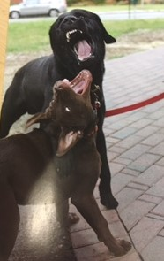

Employee
Rae
A caterer I once knew had a lemon chicken salad that she would serve at our meetings. I loved it so much that I wanted to make it myself. I couldn't ask her for the recipe because I knew she wouldn't give it to me so I searched for recipes online until I found something similar to it. I then tweaked it until I was able to get it just right and it was exactly like the one the caterer made. I used the creative side of my brain to find the right ingredients and play with them to make sure they would blend together perfectly to match the caterer's recipe and I used the logical side of my brain to measure out the correct amounts of the ingredients for the recipe.

Hi, my name is Sharon. I create websites to get people outdoors and get moving. I like to hear people's feedback on where they like to go to when they spend time outdoors. Would you like to share your favorite outdoor places that you would recommend to others?
Pump Up Song
The people in this picture represents how I felt at my previous job. I had been doing the same thing for over eleven years with no opportunities for advancement or growth. I was bored and ready to do something different.
This picture represents where I'd like to be in three years. Right now, going through the bootcamp, I have very little time for anything else, including my dog. My dog got used to me working from home for the past year and spending my free time with her. Now I don't have much time to spend with her or to do anything else. In three years I'm hoping my life will have calmed down enough so I can spend the majority of my free time with my dog as well as do the other things that I enjoy.
I plan to bridge the two by working hard and just taking each day as it comes and seeing where this all takes me.
Improve My Skills/Gain New Skills